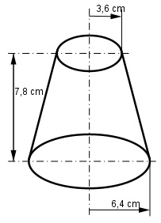

Aufgabe 251 Wie groß sind das Volumen V und die Oberfläche O des dargestellten Körpers?

Kegelstumpf: л * h V = ------- * (r12 + + r22) 3 л * 7,8 V = --------- * (6,42 + + 3,62) cm3 3 V = л * 2,6 * (40,96 + 23,04 + 12,96) cm3 V = 628,3 cm3 Kegelstumpfoberfläche: AB = 6,4 cm - 3,6 cm = 2,8 cm Satz von Pythagoras im Dreieck ABC: BC2 = AB2 + AC2 = = 2,82 cm2 + 7,82 cm2 = 68,68 cm2 |√ BC = 8,3 cm = s O = Kreis 1 + Kreis 2 + Kegelstumpfmantel O = л * r12 + л * r22 + л * s * (r1 + r2 ) cm2 = O = л * 6,42 + л*3,62 + л * 8,3*(6,4 + 3,6 )cm2 = O = 128,6 cm2 + 40,7 cm2 + 260,6 cm2 = 429,9 cm2